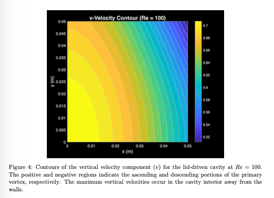
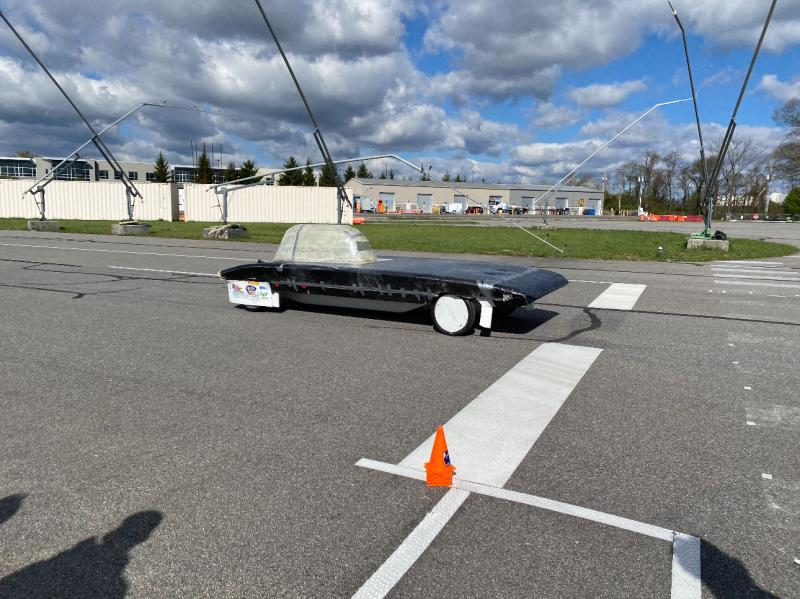
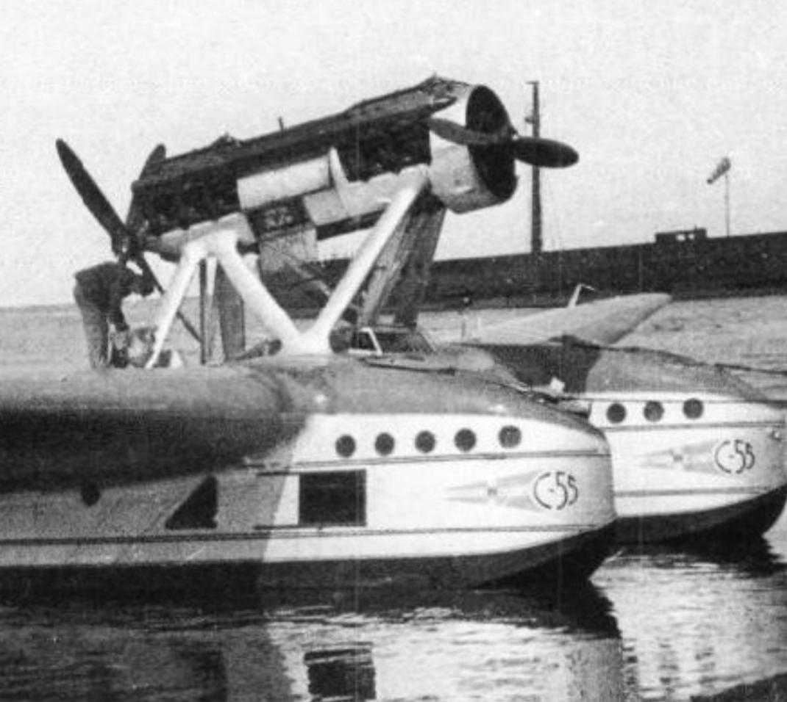

Featured Work
C3 COSMIC Challenge — Lunar Payload
Project Lead | Sept 2025 – May 2026
Leading a team of 10 aerospace engineers to design a lunar payload delivered by the Griffin lander, focused on enabling early infrastructure for a permanent lunar outpost for future Artemis Missions.
- Placed 5th overall out of 34 teams in C3 COSMIC Challenge, 3rd best team in Lunar Operations track
- Placed 2nd overall in Aerospace Senior Design Poster Expo
- Designed cooling system for the payload to withstand 1.6k W to survive lunar night cycles with radiator panels, heat pipes filled with ammonia, and NASA's RHUs
- Managed technical communication with mentors and faculty advisors, ensuring requirements alignment, milestone readiness, and design maturity

VT LUNA — Lunar Regolith Collection Rover
Team Lead Senior Design Experimental Project | Sept 2025 – May 2026
Designing and constructing an autonomous rover capable of collecting lunar regolith simulant and transporting it to a holding container for lunar landing pad construction.
- Won 3rd best prototype in C3 COSMIC challenge out of 34 teams
- This system is fully autonomous using motion capture system with Arduino Giga R1 and Raspberry Pi 4
- The rover was integrated with a motion capture system to run fully autonomously, collecting around 1 kg/min and 4 kg of sand per run
- The rover's chassis was is made up aluminum plexiglass and soldering key electrical components
- The rest of the rover were all designed from CAD and 3D-printed, this includes the electronics cover, wheels, bucket, scoop and arms
[ Poster Document ]
Click button to view
Aerospace Senior Design Poster Expo
Award-Winning Presentation | Spring 2026
Showcasing the comprehensive design and engineering processes behind the Stationary Tile Maker (STiM) and VT LUNA's Rover.
- Placed 2nd overall in the Aerospace Senior Design Poster Expo
- Conduced information down within the poster to present the complex subsystems to industry professionals and faculty

Incompressible Navier-Stokes Solver
AOE 4434: Intro to CFD | Fall 2025
Developed a 2D incompressible Navier-Stokes solver from scratch using artificial compressibility with time derivative preconditioning.
- Implemented point Jacobi iterative scheme with second-order accurate central differencing for spatial discretization
- Verified implementation using Method of Manufactured Solutions (MMS), achieving discretization errors of 10-5 to 10-6
- Performed systematic mesh refinement study (33×33, 65×65, 129×129) with Richardson extrapolation for error estimation

VT SolarCar Team — Traction, Aerodynamics & Manufacturing
Division Member | Jan 2025 – Present
Contributing to the aerodynamic efficiency and structural integrity of Virginia Tech's solar racing vehicle through advanced manufacturing and testing.
- Executed coast-down performance testing across variable tire pressures (60-80 psi), achieving a 7% reduction in rolling resistance through data-driven optimization
- Manufactured carbon fiber nose cone and contributed to chassis design, supporting aerodynamic efficiency and structural integrity
- Currently working on adding back extensions on the car, which will provide more solar area to improve performance

Savoia-Marchetti S.55 — Twin-Hull Interference Analysis
Configuration Aerodynamics | Fall 2025
Conducted comprehensive aerodynamic analysis of the iconic 1920s Italian flying boat, investigating the "tunnel effect" created by its unique twin-hull catamaran configuration.
- Analyzed twin-hull interference drag using Hoerner's empirical methods, quantifying a 6-8% drag penalty from the Venturi effect between hulls
- Applied Bernoulli's Principle to characterize pressure distribution and lateral suction forces acting on the hull structures
- Investigated aero-structural trade-offs between hull spacing, interference drag, and wing structural weight requirements